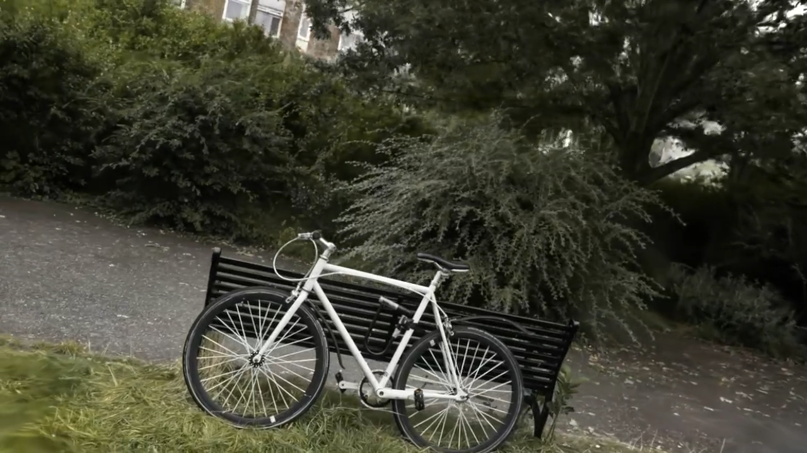
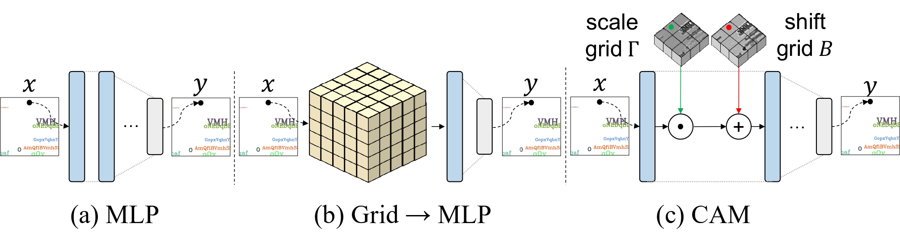
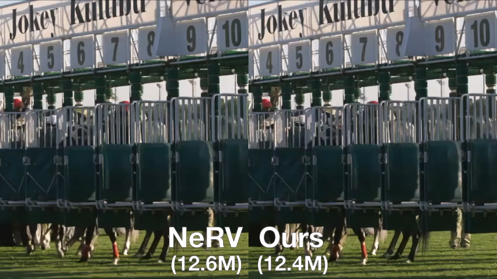
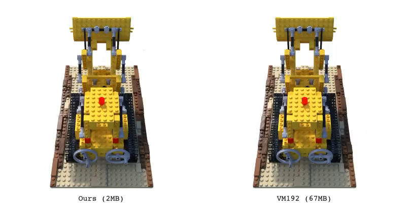

|
Joo Chan Lee
|

|
ResearchRepresentative papers are highlighted. |
|

|
Compact 3D Gaussian Representation for Radiance Field
Joo Chan Lee, Daniel Rho, Xiangyu Sun, Jong Hwan Ko, Eunbyung Park arXiv:2311.13681, 2023 A comprehensive framework for 3D scene representation, achieving high performance, fast training, compactness, and real-time rendering. |
|

|
Coordinate-Aware Modulation for Neural Fields
Joo Chan Lee, Daniel Rho, Seungtae Nam, Jong Hwan Ko, Eunbyung Park arXiv:2311.14993, 2023 Injecting spectral bias-free grid representations into the intermediate features of the MLP achieves high performance with compactness. |
|

|
FFNeRV: Flow-Guided Frame-Wise Neural Representations for Videos
Joo Chan Lee, Daniel Rho, Xiangyu Sun, Jong Hwan Ko, Eunbyung Park ACM MM, 2023 Incorporating flow information into frame-wise representations to exploit the temporal redundancy across the frames in videos. |

|
Kernel Shape Control for Row-Efficient Convolution on Processing-In-Memory Arrays
Johnny Rhe, Kang Eun Jeon, Joo Chan Lee, Seongmoon Jeong, Jong Hwan Ko ICCAD, 2023
A novel pruning method for a Processing-In-Memory hardware.
|
|

|
Masked Wavelet Representation for Compact Neural Radiance Fields
Daniel Rho*, Byeonghyeon Lee*, Seungtae Nam, Joo Chan Lee, Jong Hwan Ko, Eunbyung Park CVPR, 2023 Using the wavelet transform with learnable masking for compact grid-based neural radiance fields. |

|
A Reconfigurable Neural Architecture for Edge–Cloud Collaborative Real-Time Object Detection
Joo Chan Lee, Yongwoo Kim, SungTae Moon, Jong Hwan Ko IEEE Internet of Things Journal, 2022
A single-weight reconfigurable object detector for collaborative intelligence.
|

|
Scalable Color Quantization for Task-Centric Image Compression
Jae Hyun Park, Sang Hoon Kim, Joo Chan Lee, Jong Hwan Ko ACM TOMM, 2022
Images with variable color space sizes can be extracted from a master image generated by a single DNN model.
|

|
A Splittable DNN-Based Object Detector for Edge-Cloud Collaborative Real-Time Video Inference
Joo Chan Lee, Yongwoo Kim, SungTae Moon, Jong Hwan Ko AVSS, 2021
A splittable object detector for real-time collaborative inference.
|

|
Robust detection of small and dense objects in images from autonomous aerial vehicles
Joo Chan Lee, JeongYeop Yoo, Yongwoo Kim, SungTae Moon, Jong Hwan Ko EL, 2021
Technical report for high performance small object detection.
|

|
VisDrone-DET2020: The Vision Meets Drone Object Detection in Image Challenge Results
Joo Chan Lee, JeongYeop Yoo, Yongwoo Kim, SungTae Moon, Jong Hwan Ko ECCV Workshops, 2020
VisDrone Challenge 1st Place Winner
|
![[Certificate]](http://iris.skku.edu/img/2020-task1_first.png){kind=link}
|
Design and source code from Jon Barron's website. |